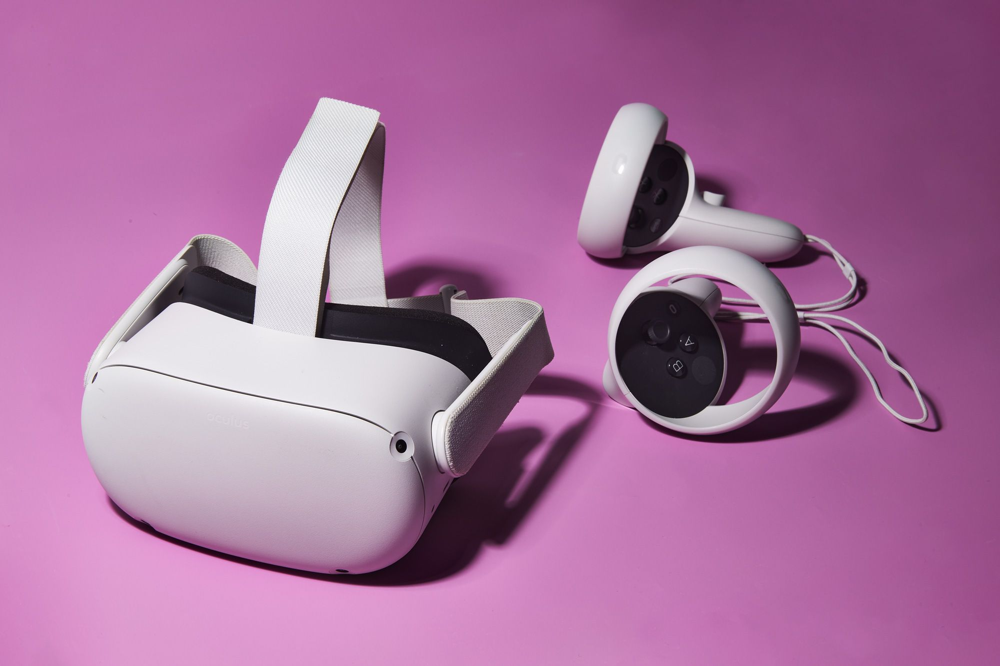
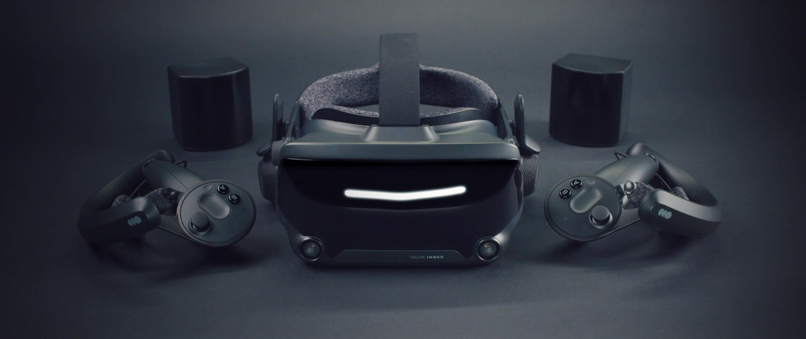
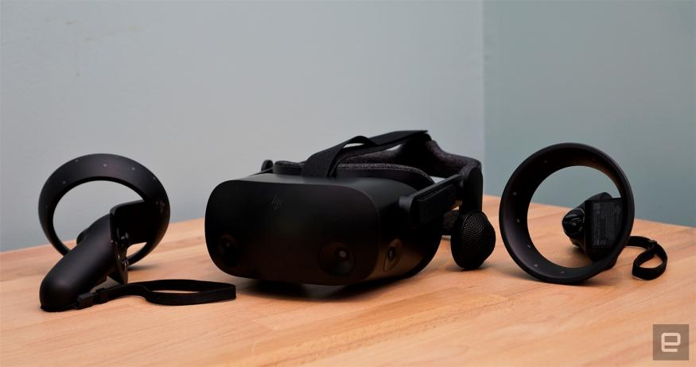
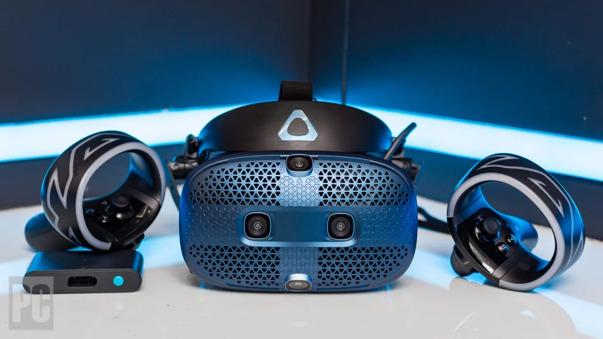
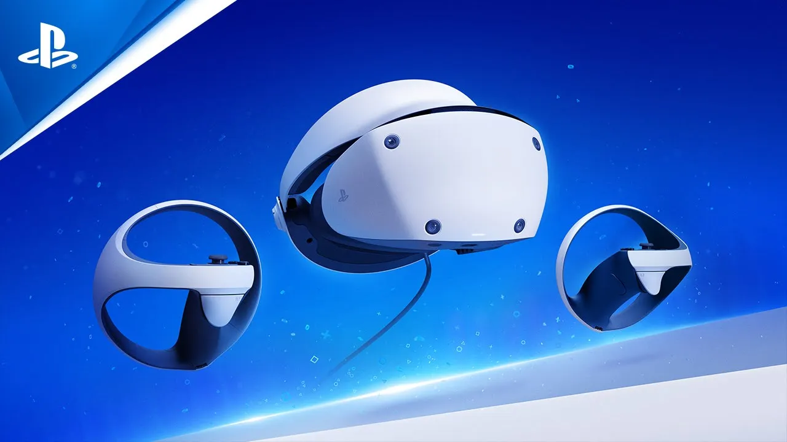

Top 5 VR-brillen
Omdat de VR-technologie steeds verder wordt verbeterd, wordt het gebruik van VR brillen steeds gebruiksvriendelijker en biedt het een betere ervaring met meer gunstige prijzen. Ik heb daarom hier een lijstje samengesteld van de beste VR-brillen die je nu kan kopen. Dit zijn de drie belangrijkste soorten virtual reality headsets die nu te koop zijn:
- Smartphone VR-brillen
- Gekoppelde VR-brillen (gekoppeld aan pc of gameconsole)
- Standalone VR-brillen
Welke van deze headsets zijn de beste om te kopen? Wat zijn de voor- en nadelen van de vrbrillen? In onderstaand overzicht de top 5 van VR-brillen die er op dit moment te koop zijn.
1. Meta quest 2
 Beoordeling: Beste algehele en beste stand-alone VR-brilVoordelen van Oculus Quest 2:
- Redelijke prijs
- Makkelijk te configureren en te begrijpen
- Draadloze ervaring
- Geen computer nodig
- Geweldig ontwerp
- Optionele bekabelde verbinding voor gaming-pc VR
- Alleen oculus-store inhoud
- Vereist Facebook-accountkoppeling
- Batterij gaat 2-3 uur mee
Oculus Quest 2 is de beste headset voor degenen die niet over de apparatuur beschikken om gekoppelde headsets te gebruiken en niet gebonden willen zijn aan kabels. Oculus Quest is eenvoudig in te stellen en vereist geen set-up van sensoren en configuratie met een pc, waarna alles wat je hoeft te doen is om de headset op te zetten en je ervaring te starten. Er zijn ook een aantal extra functies die momenteel in ontwikkeling zijn, zoals Oculus Link waarmee je je Oculus Quest met een kabel op je pc kunt aansluiten, en met deze functie heb je toegang tot meer veeleisende applicaties zoals SteamVR en andere functies.
2. Valve Index
 Beoordeling: PC-gekoppelde VR-bril met de beste kwaliteitVoordelen van Valve Index:
- Goede controllers
- Uitstekende audiokwaliteit
- Aanpasbaar
- Zacht kussen
- Zeer zware headset (807 g)
- Vereist zware/dure computer
- Duur
Valve Index is voorlopig een van de beste VR-apparaten en de standaard VR-bril om mee verder te gaan. Het wordt ook geleverd met zachte en hoogwaardige kussens en een vervangbare gezichtsinterface, waardoor de eindgebruiker een comfortabelere ervaring krijgt. Het meest fascinerende deel van Valve Index zijn de controllers. In tegenstelling tot andere VR-controllers hoef je de controllers niet vast te houden, omdat u ze eenvoudig aan uw hand kunt vastmaken en ze in 4 verschillende posities kunnen worden versteld - waardoor ook open handbewegingen worden vergemakkelijkt. Het beste daarvan is dat de Index-controllers druksensoren hebben die detecteren hoe hard je in de handgrepen knijpt en deze informatie weergeven in de applicatie of game. De Valve Index maakt ook gebruik van Lighthouse Base-volgstations (dezelfde die worden gebruikt door Vive).
3. HP-reverb
 Beoordeling: Beste Windows mixed reality VR-brilVoordelen van HP-reverb:
- Superieure visuele helderheid
- Makkelijk op te zetten
- Slechte ergonomie van de controller
- Beperkt gezichtsveld
De HP Reverb is de beste Windows Mixed Reality-headset op de markt. Het heeft een veel betere schermresolutie dan alle andere vergelijkbare headsets en is eenvoudig in te stellen. De HP Reverb heeft echter een slechte controllerergonomie door Windows Mixed Reality en ook een slechte tracking van controllers. De HP Reverb maakt gebruik van Windows MR dat een beperkte bibliotheek heeft in vergelijking met andere headsets en ook prijzig is, maar het is de beste optie voor hoogwaardige beelden.
HTC Vive Cosmos
 Voordelen van HTC Vive Cosmos:- Sensor-vrij
- Geweldige displays en kwaliteit
- Beperkte ondersteuning
- Duur
Na een paar jaar heeft HTC eindelijk een nieuwe headset gemaakt - HTC Vive Cosmos.
De HTC Vive is in veel opzichten beter dan de vorige headsets van HTC en is met recht een van de beste HMD's
op
de markt.
Het heeft een geweldig display, up-to-date luidsprekers en een inside-out volgsysteem met 5 camera's,
zodat sensoren niet meer nodig zijn, wat extra gedoe met configuratie voorkomt.
Het heeft ook een aantal onderscheidende kenmerken, zoals modulaire mogelijkheden,
wat betekent dat de voorplaat van de VR-bril kan worden verwijderd en vervangen door verschillende mods.
Het heeft ook de mogelijkheid om de HMD gemakkelijk omhoog te klappen om de echte wereld te zien zonder de
hele
headset te verwijderen.
Naast een goed uitgebalanceerde hoofdband in halo-stijl en vervangbare kussens, is het een geweldig maar
duur
VR-apparaat.
Playstation VR
 Beoordeling: Beste VR-bril voor PS4 en PS5 gamersVoordelen van Playstation VR:
- Meeslepende VR-ervaring
- Werkt met niet-VR-apps en -games
- Motion control ondersteuning
- Lage instapkosten in vergelijking met pc-gebaseerde headsets
- Iets minder krachtig dan andere gekoppelde VR-brillen
- Alleen te gebruiken in combinatie met een PS4 of PS5
Het virtual reality-systeem van Sony, de PlayStation VR, is ontworpen voor gebruik met de PlayStation 4 of 5. Het is een krachtige VR-bril dat qua specificaties wel iets minder presteert dan de pc-aangedreven VR-brillen, maar wel minder duur is, vooral als je de vereiste PS4 plaatst tegenover de duurdere VR-ready pc's die bijvoorbeeld de Valve Index en Cosmos nodig hebben. Bovendien overtreffen de grafische mogelijkheden en het volgen van bewegingen veel meer dan op smartphones gebaseerde VR-headsets zoals de Samsung Gear VR. De PlayStation VR valt op in prijs en gebruiksgemak.